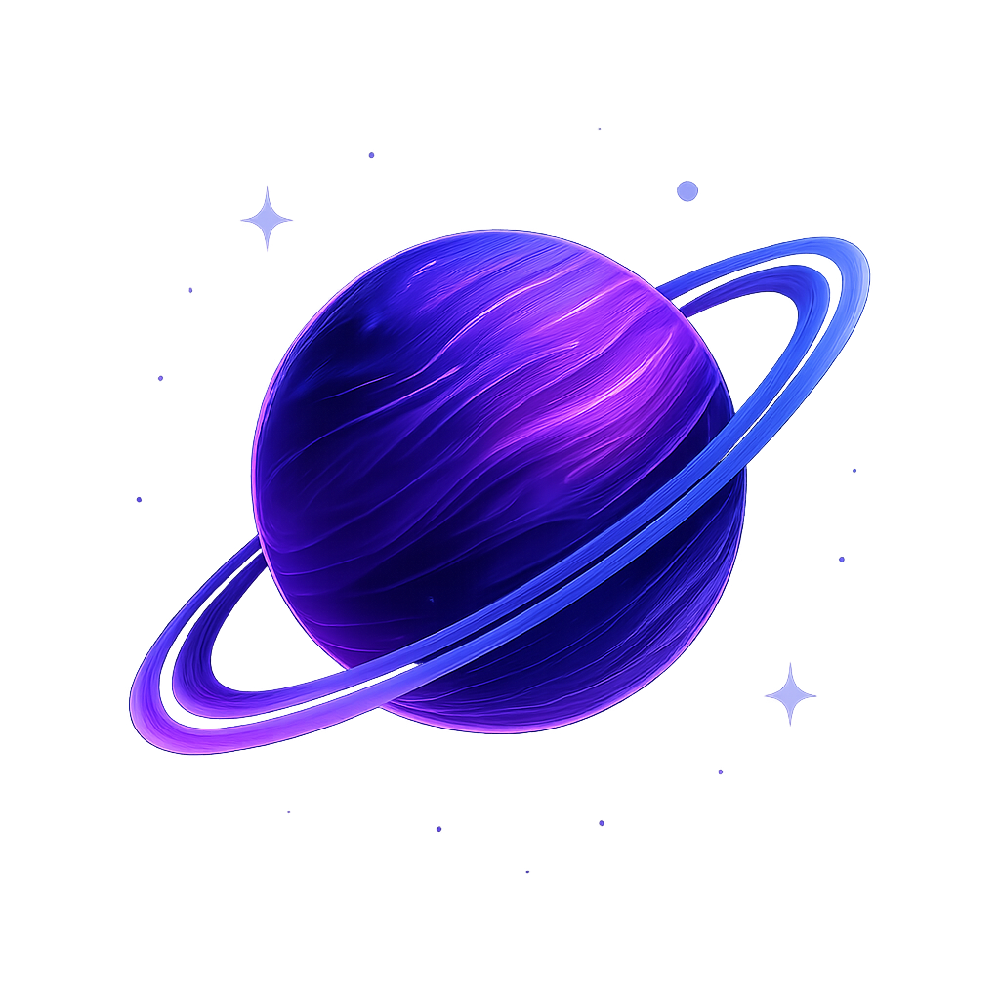
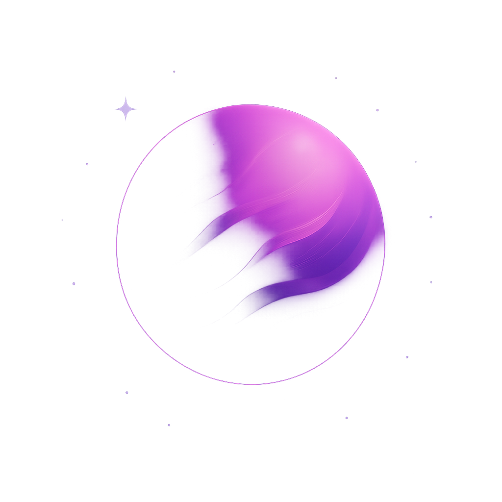
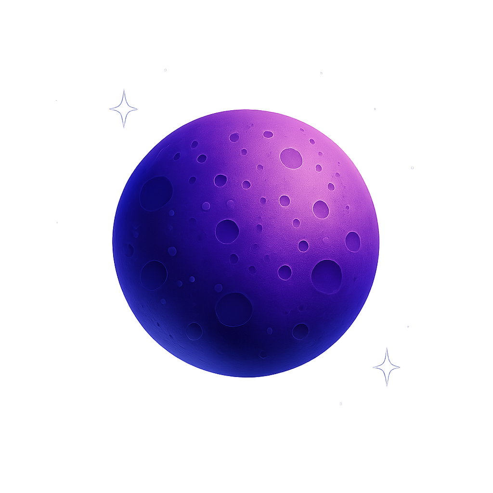
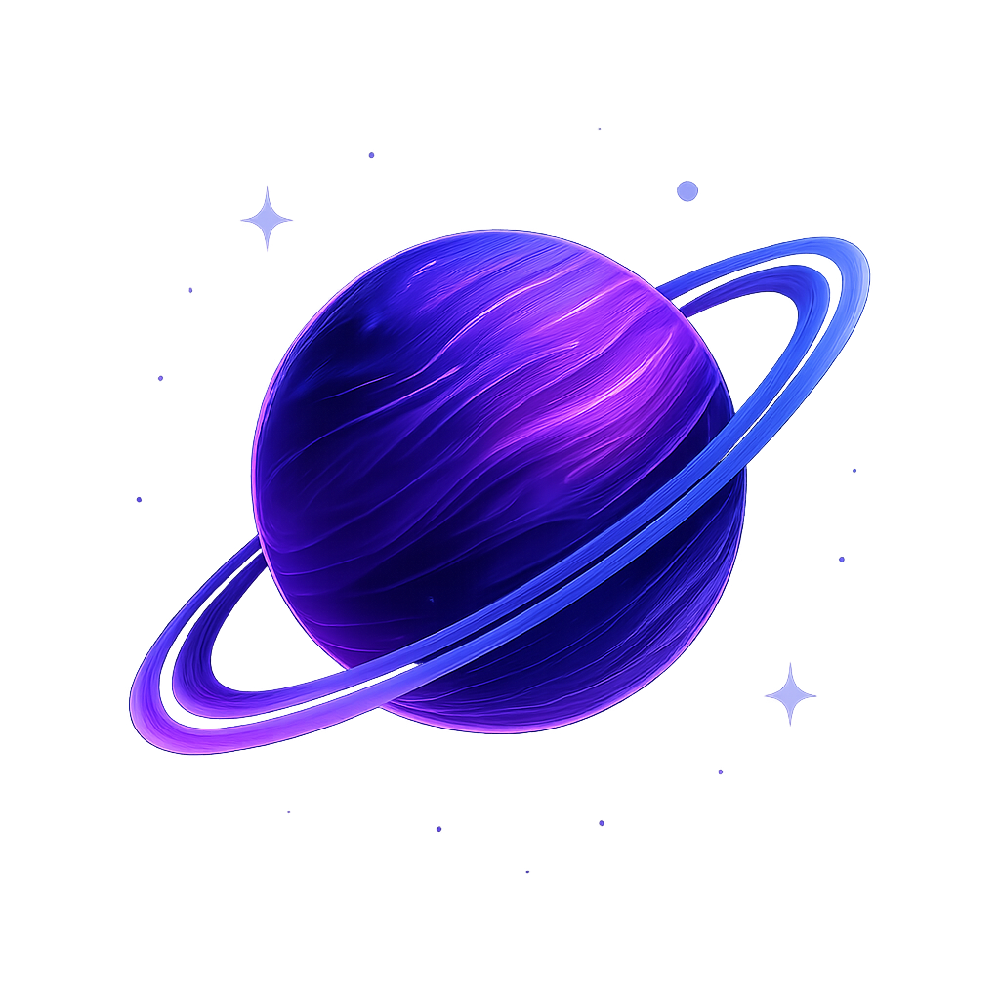
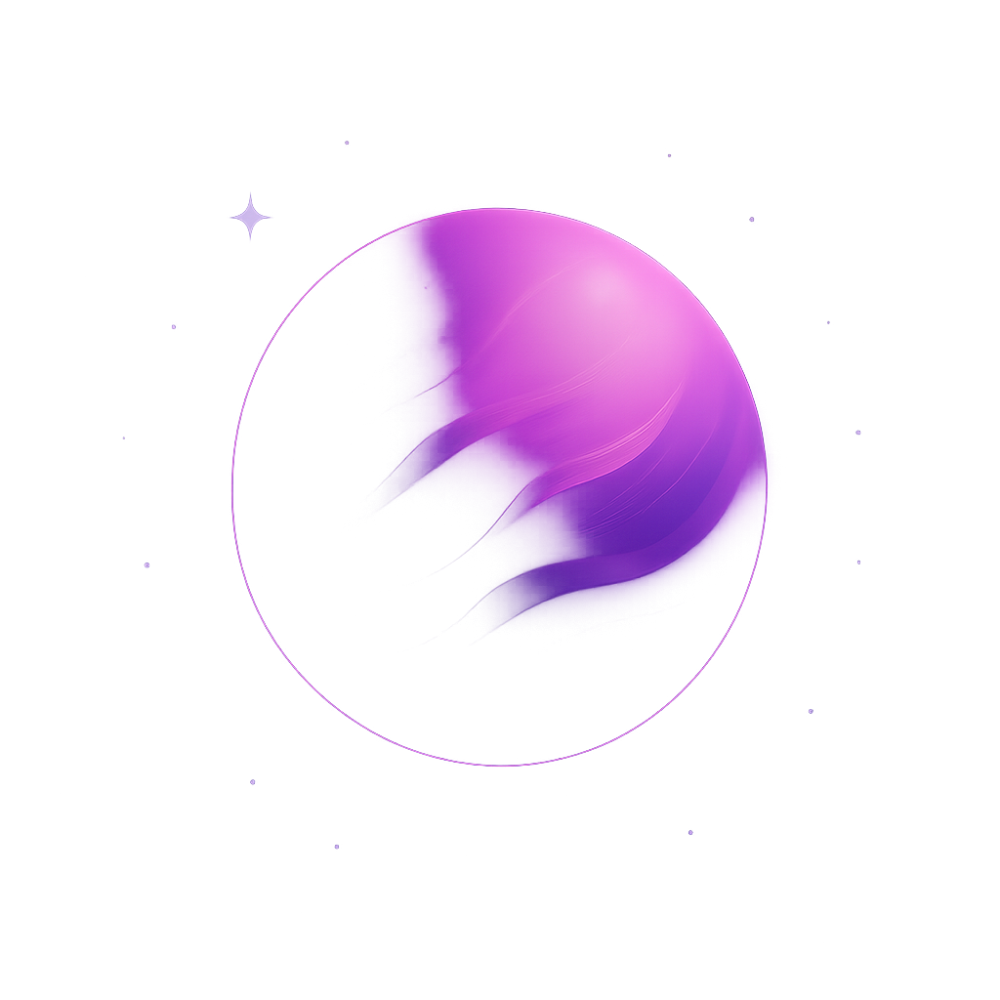
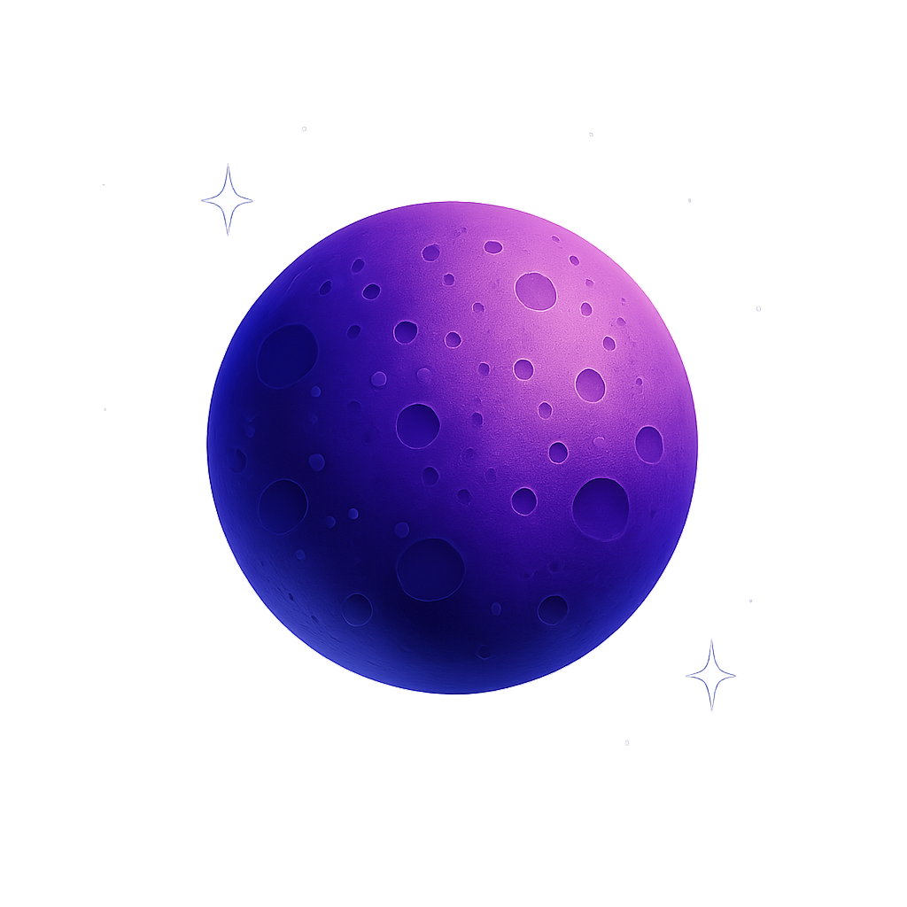

Chaitra S
Automating Deployments
Securing Pipelines
Scaling Infrastructure
 About Me
About Me
 Resume

Skills

Projects

Certifications
Resume

Skills

Projects

Certifications
 Blogs
Blogs
Short Cosmic Story, an Intro to my DevOps philosophy
"Welcome to my DevOps-Verse — a universe where code, tools, and teams orbit in harmony. To me, DevOps isn’t just a practice; it’s a gravitational force that aligns scattered constellations of development, testing, delivery, and operations into a single stellar system.
Even when space-time ripples — broken builds, failed deployments, or system overloads — DevOps strategies like rollbacks and automated healing bring the universe back into balance. It’s this dynamic yet resilient flow that fuels every project’s journey from idea nebula to production stardust."